Phần II · Bài 10 — Nhận diện trạng thái cảm xúc qua biểu cảm khuôn mặt
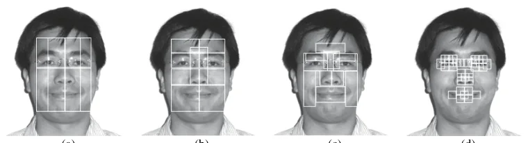
(a) (d) (b) (c)
Hình 5 60 vùng đặc trưng mở rộng được ký hiệu bằng các hộp chữ nhật ở các mức độ chi tiết khác nhau (từ trái sang phải) a) Vùng trên, dưới, trái, phải và trung tâm của khuôn mặt. b) Trán, mắt trái và mắt phải, hai mắt, mũi, miệng, má trái và má phải và lỗ mũi. c) Trán, lông mày, chi tiết mắt trái và mắt phải, má trái và má phải, hai bên trái và phải của mũi, lỗ mũi, miệng. d) Chi tiết mắt trái và mắt phải, chi tiết mũi, chi tiết miệng và chi tiết sống mũi
−→ F 0, −→ F 1, −→ F 2, . . . , −→ F 60
−→ X =
. (8)
Mỗi đặc trưng −→ F n là một vector đặc trưng được trích xuất bằng (6) và (7) từ ma trận con của đầu ra tích chập cho ảnh với dãy bộ lọc Gabor. Chỉ số trên n biểu thị tập hợp các đặc trưng thu được từ mỗi vùng trong số 60 vùng vị trí đặc trưng.
−→ F n = [μ00, σ00, μ01, σ01, . . . , μmn, σmn] . (9)
Các đặc trưng được trích xuất từ các vùng thể hiện trong Hình 5(a) và Hình 5(b) dành cho Mức 2 và 3 của biểu diễn FEETS. Các đặc trưng này không phụ thuộc vào vị trí của 4 điểm chuẩn (fiducial points), thay vào đó, chúng lấy tham chiếu từ khu vực nơi khuôn mặt được phát hiện. Theo cách tiếp cận này, các đặc trưng mức 2 và 3 (có thể coi là các đặc trưng thô) không bị ảnh hưởng bởi độ chính xác của các bộ máy định vị đặc trưng. Độ chính xác hoặc việc đặt các vùng quan tâm này không cần phải quá chính xác vì vùng chúng bao phủ có thể được coi là lớn so với các đặc trưng mức 4 và 5. Các đặc trưng mức 4 và 5 được trích xuất dựa trên vùng quan tâm tương ứng của chúng, được ngoại suy từ vị trí của 4 điểm chuẩn.
3 Mạng Nơ-ron Đệ quy Dựa trên Xác suất (PRNN)
Phần này mô tả cách Mạng Nơ-ron Xác suất (PNN) kết hợp với Nơ-ron Đệ quy có thể được sử dụng để xử lý biểu diễn cấu trúc cây của khuôn mặt người. PNN nhúng thông tin phân biệt vào mô hình phân loại và đã được sử dụng thành công để phân cụm từ các đặc trưng đầu vào. Perlovsky đã đề xuất các mạng nơ-ron để mô hình hóa bất kỳ mật độ phân bố xác suất nào dưới dạng Mô hình Hỗn hợp Gaussian [6, 9]. Sau đó, nó được mở rộng cho nhiều ứng dụng kỹ thuật và để mô hình hóa các chức năng não bậc cao [3]. Streit và Luginbuhl [29] đã đề xuất PNN dưới dạng PNN truyền thẳng bốn lớp sử dụng nhân Gaussian, hoặc cửa sổ Parzen, thực hiện các hỗn hợp Gaussian đồng phương sai. Roberts và Tarassenko [30] đã đề xuất một phương pháp mạnh mẽ cho các Mô hình Hỗn hợp Gaussian (GMM). Phương pháp này sử dụng GMM cùng với một ngưỡng quyết định để từ chối dữ liệu chưa biết trong quá trình thực hiện tác vụ phân loại. Mạng Hàm Cơ sở Ellip (EBFN) được đề xuất trong [31] xác định các tâm cụm của đặc trưng đầu vào trong lớp ẩn của chúng. Người ta đã chứng minh rằng EBFN vượt trội hơn mạng hàm cơ sở xuyên tâm và lượng tử hóa vector. Mạng Nơ-ron Dựa trên Quyết định Xác suất (PDBNN) có thể được coi là một dạng đặc biệt của GMM với các ngưỡng quyết định có thể huấn luyện được. Trong [32], một hệ thống nhận dạng khuôn mặt dựa trên PDBNN này đã được đề xuất, trong đó một ngưỡng quyết định cho mỗi lớp được sử dụng để từ chối các mẫu không thuộc về bất kỳ lớp nào đã biết.
Trong chương này, một kiến trúc lai, cụ thể là Mạng Nơ-ron Đệ quy Dựa trên Xác suất (PRNN), được đưa ra, sử dụng GMM ở lớp ẩn và các nơ-ron đệ quy ở lớp đầu ra. Nhiệm vụ học của kiến trúc này là sự kết hợp giữa các thuật toán học không giám sát cục bộ và học có giám sát toàn cục. Chi tiết và phân tích của mô hình này được trình bày trong [33]. Phần sau đây mô tả ngắn gọn kiến trúc và thuật toán học của nó.
3.1 Kiến trúc
Hình 6 mô tả kiến trúc của mô hình đệ quy được đề xuất trong đó mỗi nơ-ron ở lớp ẩn được biểu diễn bằng một Mô hình Hỗn hợp Gaussian (GMM) và mỗi nơ-ron ở lớp đầu ra được biểu diễn bằng một mô hình hàm kích hoạt sigmoid. Mỗi tham số trong GMM này có một ý nghĩa và chức năng cụ thể. Tất cả các trọng số và ngưỡng nút được đưa ra một cách tường minh bằng các biểu thức toán học liên quan đến ước lượng các tham số của hỗn hợp Gaussian, các xác suất lớp tiên nghiệm và chi phí phân loại sai. Như thể hiện trong Hình 6(a), mô hình nơ-ron đệ quy có cấu trúc được điều chỉnh sao cho các đặc trưng đầu vào dưới dạng đầu ra của các nút con đóng vai trò là vector đầu vào của các GMM ở lớp ẩn. Hình 6(b) trình bày kiến trúc của mỗi GMM trong đó đầu ra của GMM là tổng có trọng số của G mật độ thành phần.
Kiến trúc cơ bản của mô hình nơ-ron đệ quy để xử lý cấu trúc được điều chỉnh từ các công trình của [34]. Tính đệ quy ở đây ngụ ý rằng các bản sao của cùng một mạng nơ-ron được sử dụng để mã hóa mọi nút của các mẫu có cấu trúc. Mỗi nơ-ron đệ quy nhận hai loại đầu vào mà sau đó nó sử dụng để tạo ra đầu ra của mình. Loại thứ nhất là đầu ra của các nút con của nút đó, trong khi loại thứ hai là các thuộc tính đầu vào của các đỉnh liên quan được cung cấp bởi cấu trúc của mẫu cơ bản. Kiến trúc như vậy đã được chứng minh là hữu ích trong việc thực hiện các tác vụ phân loại liên quan đến các mẫu có cấu trúc [33]. Nó cũng đủ linh hoạt để cho phép mô hình xử lý các biểu diễn của các cấu trúc bên trong khác nhau và số lượng nút thay đổi.
Cần phải giả định một số lượng nút con tối đa cho mỗi nút (tức là hệ số phân nhánh tối đa c). Ví dụ, cây nhị phân là một ví dụ về cấu trúc cây có hệ số phân nhánh tối đa c bằng hai (mỗi nút chỉ có hai nút con). Vì không có đầu vào nào phát sinh từ các nút con tại các nút tận cùng (tức là các nút ở L5 trong Hình 3), chúng ta đặt tất cả các thành phần y trong lớp đầu vào bằng không.
(a)
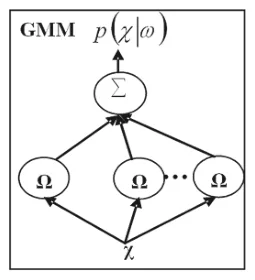
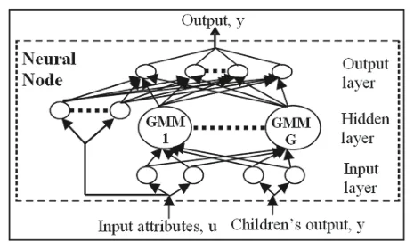
(b)
Hình 6 a) Kiến trúc của mạng nơ-ron đệ quy dựa trên xác suất sử dụng GMM cho Biểu diễn Nút Nơ-ron; b) cấu trúc của Mô hình Hỗn hợp Gaussian [1] cho một nút nơ-ron GMM, trong đó và lần lượt biểu thị phép lấy tổng và các phép toán hàm cơ sở Gaussian
Các nút tận cùng trong trường hợp này được gọi là các nút biên (frontier nodes). Quá trình xử lý truyền thẳng của các cấu trúc cây đi từ các nút biên đến nút gốc theo cách từ dưới lên. Quá trình xử lý từ dưới lên từ một nút con đến nút cha của nó có thể được ký hiệu bằng toán tử q−1.
Bây giờ, gọi m là số chiều của các đặc trưng đầu vào của mỗi nút trong cây, và p là số chiều của đầu ra của mỗi nút. Mẫu đầu vào của mỗi GMM có thể được ký hiệu là u q−1yT χ =
= {xi; i = 1, 2, . . . (m + p × c)}, (10)
trong đó u và y lần lượt là vector đầu vào m chiều và vector đầu ra p chiều. q−1 là ký hiệu cho thấy đầu vào của nút được lấy từ nút con của nó sao cho q−1y tương đương với:
T
q−1
1 yq−1 2 y · · · q−1 c y q−1y =
. (11)
Giả sử mẫu đầu vào đóng vai trò là mẫu có cấu trúc, χ gắn với lớp ω sao cho hàm hợp lý lớp p(χ|ω) đối với lớp ω là một hỗn hợp của G thành phần trong phân bố Gaussian, tức là
G
p(χ|ω) =
P( g|ω)p(χ|ω, g), (12)
g=1 trong đó g biểu thị các tham số của thành phần hỗn hợp thứ g, G là tổng số thành phần hỗn hợp. P( g|ω) biểu thị xác suất tiên nghiệm của cụm g. Nó cũng được gọi là các hệ số hỗn hợp của thành phần thứ g, theo định nghĩa,
G
P( g|ω) = 1, (13)
g=1
Trong cách tiếp cận này, p(χ|ω, g) là hàm mật độ xác suất của thành phần thứ g thường là một phân bố Gaussian với trung bình μg và hiệp phương sai g, được cho bởi p(χ|ω, g) = 1 (2π)(m+p×c)/2| g|1/2 ·exp
−1
2(χ −μg) −1 g (χ −μg)T
. (14)
Như thể hiện trong Hình 6(a), đầu ra của mạng đệ quy được đề xuất có thể được định nghĩa đơn giản như sau:
y = Fk(Wp + Vu), (15)
⎛
⎞ p1(χ|ω)
⎜⎝
⎟⎠. Fk(.) là vector k chiều, trong đó các phần tử của nó là
... pn(χ|ω))
trong đó p = hàm kích hoạt sigmoid phi tuyến. W và V lần lượt là các tham số trọng số trong các ma trận (p × n) và (p × m) chiều ở lớp đầu ra.
Theo [35], một lớp ẩn duy nhất của mạng đệ quy dựa trên xác suất này là đủ để xấp xỉ bất kỳ bài toán ánh xạ cấu trúc nào. Nhiệm vụ học trong cách tiếp cận này không đòi hỏi kiến thức tiên nghiệm về bất kỳ mẫu có cấu trúc nào hoặc bất kỳ thông tin tiên nghiệm nào liên quan đến cấu trúc bên trong của các đặc trưng đầu vào. Tuy nhiên, việc học mô hình được đề xuất này bằng thuật toán BPTS dựa trên gradient [25] có thể gặp phải các vấn đề đã đề cập trước đó về cực tiểu cục bộ và phụ thuộc dài hạn [36]. Điều này là do khi gradient tiêu biến; thông tin học có thể biến mất ở một mức nào đó của cấu trúc cây trước khi nó đến được các nút biên [26]. Sự hội tụ có thể bị đình trệ và dẫn đến khả năng khái quát hóa kém. Một loại thuật toán học cấu trúc đặc biệt được đề xuất trong chương này để khắc phục các vấn đề này. Chúng tôi trình bày chi tiết trong tiểu mục tiếp theo.
3.2 Thuật toán học
Lược đồ học được chia thành hai giai đoạn. Trong giai đoạn đầu tiên, thuật toán không giám sát cục bộ cho các tham số của GMM có thể áp dụng các thuật toán Kỳ vọng–Tối đa hóa (EM). Trong giai đoạn thứ hai, học có giám sát có cấu trúc toàn cục diễn ra cho các mạng nơ-ron đệ quy ở lớp đầu ra. Thuật toán tối ưu hóa có phạt được áp dụng trong quá trình xử lý cấu trúc trong giai đoạn thứ hai này. Cả hai giai đoạn học đều yêu cầu một số epoch để hội tụ và quá trình học có giám sát có cấu trúc toàn cục bắt đầu sau khi quá trình học không giám sát cục bộ đã hội tụ.
3.2.1 Giai đoạn học không giám sát cục bộ cho các GMM
Các tham số của GMM như thể hiện trong (14) được khởi tạo và ước lượng bởi giai đoạn học này. Giai đoạn học này dựa trên phân cụm không giám sát để xác định các tham số. Phương pháp Kỳ vọng–Tối đa hóa (EM) [29] được sử dụng cho lược đồ học không giám sát cục bộ này. Phương pháp EM bao gồm hai bước: Bước thứ nhất được gọi là bước kỳ vọng (E) và bước thứ hai được gọi là bước tối đa hóa (M). Bước E tính toán kỳ vọng của hàm hợp lý để thu được một hàm phụ trợ và bước M tối đa hóa hàm phụ trợ đối với các tham số cần ước lượng. Thuật toán EM trong giai đoạn học không giám sát cục bộ như sau:
Sử dụng GMM trong (14), mục tiêu của việc học EM [29] là tối đa hóa log
⎛
⎞ χ1
⎜⎝
⎟⎠. Vì chúng ta gọi
... χNT hợp lý của tập đặc trưng đầu vào trong mẫu có cấu trúc χ∗= các thuộc tính quan sát được χ∗ là dữ liệu “không đầy đủ”, nên chúng ta định nghĩa một chỉ báo α jk để chỉ định dữ liệu thuộc về cụm nào và đưa nó vào hàm hợp lý như sau
NT
G
l(χ∗, Θ) = α jk logP(Θg|ω) + log p(χ j|ω, Θg)
(16)
j=1 g=1
1, nếu mẫu có cấu trúc χ j thuộc về cụm k trong đó α jk =
0, ngược lại .
Trong bước E, chúng ta lấy kỳ vọng của hàm hợp lý dữ liệu quan sát được trong (16), xác suất hậu nghiệm có điều kiện có thể thu được bằng quy tắc Bayes:
P(Θg|χ j, ˆΘ(tL)) = P(Θg|ω)p(χ j|ω, Θg) R
, tại lần lặp thứ tL (17)
r=1 P(Θr|ω)p(χ j|ω, Θr)
Trong bước M, các tham số của GMM được ước lượng lặp đi lặp lại bằng cách tối đa hóa kỳ vọng của hàm hợp lý dữ liệu quan sát được đối với , chúng ta có thể tính toán trung bình cụm và hiệp phương sai tối ưu của các mô hình GMM.
3.2.2 Giai đoạn học có giám sát có cấu trúc toàn cục cho các nút đệ quy
Quá trình học cấu trúc xuyên suốt toàn bộ các cây bắt đầu sau khi quá trình học EM hội tụ ở giai đoạn trước. Mục tiêu của giai đoạn học này là tối ưu hóa các tham số cho toàn bộ mô hình theo cách có cấu trúc. Việc tối ưu hóa làm giảm thiểu hàm chi phí được tạo bởi sai số giữa các lớp mục tiêu đã biết của cảm xúc và các giá trị đầu ra của nút gốc trong các cây. Trong giai đoạn học này, việc tinh chỉnh trong các ranh giới quyết định của GMM được thực hiện bằng cách sử dụng các giá trị mục tiêu đã biết. Các kỹ thuật học tăng cường và/hoặc phản tăng cường [37] được áp dụng để cập nhật trung bình cụm và hiệp phương sai của mỗi lớp.
Đồng thời, các tham số W và V ở lớp đầu ra thể hiện trong (15) được tối ưu hóa để khái quát hóa các cây bằng cách giảm thiểu hàm tổng bình phương sai số trong giai đoạn học này. Trong nghiên cứu này, một phương pháp tối ưu hóa có phạt được chọn cho giai đoạn học có cấu trúc toàn cục này. Chi tiết của phương pháp tối ưu hóa này có thể tham khảo [38]. Thuật toán này có khả năng cung cấp sự hội tụ nhanh hơn nhiều và tránh được hiện tượng tiêu biến gradient trong các cây sâu. Trong trường hợp sử dụng phương pháp dựa trên phạt, hàm chi phí J phải được viết lại theo [38] và một hàm phạt dạng Gaussian được đưa vào, chồng lên miền không gian trọng số.
3.2.3 Các bước học
Bước 1. Khởi tạo
a. Đặt tL = 0 và tG = 0, trong đó tL và tG lần lượt là chỉ số lặp của giai đoạn học 1 và giai đoạn 2. b. Khởi tạo ngẫu nhiên các tham số A=(W V) và g trong mô hình đệ quy dựa trên xác suất được đề xuất. c. Tính toán xác suất tiên nghiệm
NT
g|χ j, ˆ (tL)
j=1 P
P( g|ω) =
, (18)
NT
của mỗi cụm bằng các đặc trưng đầu vào và các tham số ban đầu. d. Lan truyền các mẫu học có cấu trúc để thu được đầu ra gốc.
Bước 2. Học không giám sát cục bộ cho các GMM
a. Cho các thuộc tính đầu vào {χ1, . . . , χNT } của mỗi nút trong tất cả các mẫu có cấu trúc. b. Với tL = 1 . . . TL:
Tính toán lặp lại các tham số trung bình và hiệp phương sai:
NT
g|χ j, ˆ (tL)
χ j NT j=1 P , (19)
μg(tL + 1) =
g|χ j, ˆ (tL)
j=1 P
NT
g|χ j, ˆ (tL)
(χ j −μg(tL + 1))T χ j −μg(tL + 1)
j=1 P
.
(tL + 1) =
NT
g|χ j, ˆ (tL)
j=1 P g (20) Bước 3. Học có giám sát cấu trúc toàn cục
Với tG = 1 . . . TG
a. Tính toán các đầu ra p(χ|ω) của mỗi GMM trong mỗi mẫu có cấu trúc và mỗi lớp. b. Tinh chỉnh các ranh giới quyết định của mỗi GMM bằng cách sử dụng các kỹ thuật học tăng cường và/hoặc phản tăng cường.
c. Ước lượng lặp lại các tham số trọng số, A = ak p×(m+n) ở lớp đầu ra:
−∂J ak(tG + 1) = ak(tG) + η , trong đó η là tốc độ học. (21)
∂ak
4 Cơ sở dữ liệu Cảm xúc Châu Á
Theo hiểu biết tốt nhất của chúng tôi, có rất ít nghiên cứu được thực hiện về việc phân tích hành vi cảm xúc khuôn mặt giữa các chủng tộc khác nhau trong dân số Châu Á. Hầu hết các cơ sở dữ liệu cảm xúc có sẵn công khai chứa các hình ảnh được chụp từ bản ghi video hoặc được lưu trữ ở chất lượng độ phân giải thấp. Cơ sở dữ liệu cảm xúc Châu Á gần nhất là Cơ sở dữ liệu Cảm xúc Nữ giới Nhật Bản [39], và nó chứa 213 hình ảnh của 7 biểu cảm khuôn mặt (bao gồm cả trung tính) được tạo dáng bởi 10 nữ diễn viên Nhật Bản. Một cơ sở dữ liệu biểu cảm khuôn mặt 3D [40] của Yin và cộng sự chứa 100 đối tượng ở các trạng thái cảm xúc khác nhau thuộc nhiều chủng tộc ở Mỹ. Việc phát triển cơ sở dữ liệu của chúng tôi được thiết kế để chụp ảnh khuôn mặt 2D độ phân giải cao cho nhiều chủng tộc, nhóm tuổi và giới tính khác nhau trong dân số Châu Á ở bảy trạng thái cảm xúc và ở 3 tư thế khác nhau. Vì Singapore nằm ở trung tâm Châu Á và có sự pha trộn cao của các chủng tộc khác nhau ở Châu Á, chúng tôi đã thu thập dữ liệu từ Trường Đại học của mình.
4.1 Tạo lập Cơ sở dữ liệu
Chúng tôi đã thiết lập một trạm chụp ảnh tại một địa điểm công cộng, và mời các tình nguyện viên (cả nữ và nam) thuộc nhiều chủng tộc và nhóm tuổi khác nhau từ công chúng tham gia vào đợt thu thập dữ liệu của chúng tôi. Các quy trình được trình bày trong Phụ lục.
Mỗi đối tượng được hướng dẫn ngồi trước máy ảnh. Họ được yêu cầu thực hiện 7 biểu cảm, tức là Trung tính, Tức giận, Vui vẻ, Buồn bã, Ngạc nhiên, Sợ hãi và Ghê tởm. Vì máy ảnh kỹ thuật số không thể ghi lại các biểu cảm khuôn mặt động, chúng tôi yêu cầu đối tượng thực hiện biểu cảm trong một khoảng thời gian ngắn. Lý tưởng nhất là có thể sử dụng một đoạn video để khơi gợi trạng thái cảm xúc chân thực của các đối tượng. Tuy nhiên, rất khó để cung cấp một thiết lập như vậy, đặc biệt là đối với các cảm xúc như buồn bã và sợ hãi [41]. Cowie và cộng sự [42] trích dẫn rằng, những biểu hiện cảm xúc mãnh liệt hoặc các cảm xúc sơ cấp “thuần túy” hiếm khi xảy ra. Do hạn chế về thời gian và giới hạn của thiết lập, chúng tôi đã yêu cầu các đối tượng thực hiện các cảm xúc giả lập (pseudo-emotions). Các đối tượng cũng được yêu cầu xoay người 45 độ sang trái và phải, để chúng tôi có thể chụp các biểu cảm này ở các tư thế nghiêng nửa mặt như thể hiện trong Hình 7.
4.2 Thống kê về Người tham gia
Cơ sở dữ liệu Cảm xúc Châu Á1 chứa khoảng 4947 hình ảnh cho 7 biểu cảm khuôn mặt khác nhau và 3 tư thế khác nhau từ 153 đối tượng, những người đã tham gia đợt thu thập dữ liệu trong khoảng thời gian 4 ngày. Trong số 153 đối tượng, 64 người đã đồng ý cho sử dụng hình ảnh của họ trong các ấn phẩm. Cơ sở dữ liệu Cảm xúc Châu Á có hình ảnh khuôn mặt từ nhiều chủng tộc khác nhau, bao gồm người Hoa, Mã Lai, Ấn Độ, Thái Lan, Việt Nam, Indonesia, Iran và người Da trắng (Caucasian). Khoảng 72% đối tượng thuộc chủng tộc Hoa, 7% Ấn Độ, 7% Việt Nam, 5% Da trắng, 4% Mã Lai và 4% khác, Bảng 1 cho thấy
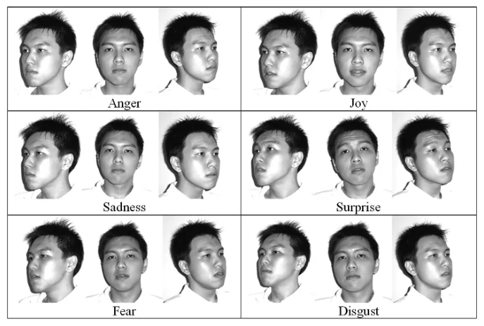
Hình 7 Đối tượng với 6 biểu cảm khác nhau ở 3 tư thế khác nhau
1 http://forse.ntu.edu.sg/emotiondatabase.htm
Bảng 1 Phân bố Đối tượng theo Chủng tộc và Giới tính
Hoa Mã Lai Ấn Độ Việt Nam Da trắng Khác Tổng cộng
Nữ 33 5 3 1 1 3 46 Nam 77 2 8 10 7 3 107 Tổng cộng 110 7 11 11 8 6 153
Bảng 2 Phân bố đối tượng theo chủng tộc và nhóm tuổi
Tuổi (năm) Hoa Mã Lai Ấn Độ Việt Nam Da trắng Khác Tổng cộng
< 20 4 0 1 0 0 3 8 20-29 80 6 5 11 4 3 109 30-39 20 0 2 0 1 0 23 40-49 6 1 2 0 3 0 12 ≥50 0 0 1 0 0 0 1 Tổng cộng 110 7 11 11 8 6 153 phân bố chi tiết của cơ sở dữ liệu theo Chủng tộc và Giới tính. Bảng 2 cho thấy phần lớn các đối tượng, khoảng 72%, thuộc nhóm tuổi 20–29, cũng như bảng phân tích chi tiết của cơ sở dữ liệu theo Chủng tộc và Nhóm tuổi. Do hạn chế về thời gian của những người tham gia, chúng tôi chỉ có thể thu được 27 người tạo dáng cho 2 tư thế nghiêng nửa mặt cho tất cả các biểu cảm.
5 Thực nghiệm và Kết quả
Chúng tôi đã đánh giá hệ thống của mình bằng Cơ sở dữ liệu Cảm xúc Châu Á mà chúng tôi đã xây dựng. Chúng tôi đã sử dụng tất cả 4947 hình ảnh từ cơ sở dữ liệu của mình chứa 153 người ở 6 cảm xúc cơ bản và 1 cảm xúc trung tính. Đối với thực nghiệm này, chúng tôi đã tạo 2 tập dữ liệu, tức là tập dữ liệu phụ thuộc đối tượng (Tập dữ liệu A) và tập dữ liệu độc lập đối tượng (Tập dữ liệu B). Tập dữ liệu phụ thuộc đối tượng sẽ có thể cho thấy hệ thống hoạt động tốt như thế nào khi hệ thống biết các cảm xúc giả lập của từng đối tượng trông như thế nào. Các ảnh huấn luyện chứa 3901 ảnh của tất cả 153 đối tượng ở các cảm xúc khác nhau. Tập kiểm thử sử dụng 1046 ảnh còn lại. Tập dữ liệu độc lập đối tượng sẽ có thể đánh giá hiệu suất của hệ thống này khi nó được sử dụng trong tình huống không có sẵn kiến thức tiên nghiệm về đối tượng, vì hệ thống không biết các cảm xúc giả lập của đối tượng được đánh giá sẽ trông như thế nào. Chúng tôi đã thực hiện kiểm chứng chéo 5 lần (5-fold cross validation) trong đánh giá này.
Chúng tôi đã đối chuẩn phương pháp được đề xuất của mình với các bộ phân loại nổi tiếng khác như Máy Vector Hỗ trợ (SVM) [43], Cây C4.5 (C45) [44], mạng Hàm Cơ sở Xuyên tâm Gaussian (mạng RBF), bộ phân loại Đa thức Bayes Ngây thơ (NBM) [45]. Chúng tôi đã sử dụng các bộ phân loại này từ gói phần mềm Weka [46]. Các tham số sau đã được sử dụng trong các thực nghiệm này: SVM sử dụng nhân đa thức, với tham số độ phức tạp là 1,0, tham số gamma là 0,01; C4.5 sử dụng cắt tỉa cây 3 lần với hệ số tin cậy là 0,25. Tất cả các bộ phân loại được kiểm thử này đều được sử dụng với đầu vào là vector phẳng. Do đó, một số tính đều đặn vốn gắn liền với cấu trúc cây của các thuật toán của chúng tôi đã bị phá vỡ. Điều này dẫn đến khả năng khái quát hóa kém hơn. Một số
Bảng 3 Hiệu suất của mô hình FEETS/PRNN so với các bộ phân loại khác
FEETS SVM C45 RBF NBM
Tập dữ liệu A 62.5% 52.9% 45.8% 30.5% 16.1% Tập dữ liệu B 56.8% 50.0% 41.4% 31.7% 15.7% trong các thuật toán này có thể đã gặp phải tình trạng hội tụ kém và dẫn đến tỷ lệ phân loại tương đối thấp. Bảng 3 tóm tắt hiệu suất của mô hình của chúng tôi so với các bộ phân loại khác đối với việc phát hiện vị trí đặc trưng hoàn hảo, cho tập dữ liệu A và B. Nó cho thấy thuật toán của chúng tôi mang lại hiệu suất tốt hơn.
Chúng tôi đã đánh giá mức độ hoạt động tốt của hệ thống khi có nhiễu trong độ chính xác của các bộ phát hiện đặc trưng, tức là sai số trong việc định vị tâm của các đặc trưng. Hình 8 cho thấy một ví dụ về sai số trong việc định vị tâm của các đặc trưng ở các mức độ sai số khác nhau. Trong các tình huống bình thường, chúng ta nên coi các mức sai số, lệch dưới 15 pixel so với tâm vị trí đặc trưng, là một sai số phổ biến trong phát hiện đặc trưng. Chúng tôi đã đối chuẩn hiệu suất hệ thống cho loại nhiễu này bằng cách sử dụng Tập dữ liệu A, so với các bộ phân loại khác. Kết quả trong Bảng 4 cho thấy FEETS là mô hình mạnh mẽ nhất và ít chịu ảnh hưởng nhất bởi loại nhiễu này. Kết quả cho thấy các bộ phân loại truyền thống bị ảnh hưởng nặng nề bởi nhiễu trong độ chính xác phát hiện đặc trưng.
Chúng tôi tiếp tục đánh giá hệ thống trong các điều kiện khắc nghiệt, nơi việc phát hiện một số đặc trưng sẽ thất bại hoàn toàn. Mất đặc trưng có thể được coi là một lỗi có tần suất xảy ra cao đối với bất kỳ bài toán nhận dạng khuôn mặt hoặc hình ảnh nào, vì các đối tượng có thể không phải lúc nào cũng ở trong tầm nhìn hoàn hảo của máy ảnh, ví dụ như bị vật thể che khuất hoặc tự che khuất. Hình 9 cho thấy một số tình huống khắc nghiệt nơi bộ phát hiện đặc trưng sẽ thất bại. Hình 9(b) cho thấy một đối tượng đeo mạng che mặt, điều này sẽ khiến bộ phát hiện mũi và miệng thất bại, tương tự, kính râm trong Hình 9(c) sẽ khiến việc phát hiện mắt thất bại. Điều này sẽ đánh giá độ bền vững của hệ thống khi các đặc trưng bị mất do không phát hiện được vị trí đặc trưng. Trong thực nghiệm này, các đặc trưng không phát hiện được sẽ được chèn thêm số không (zero-padded) để giữ nguyên
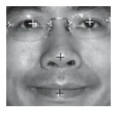
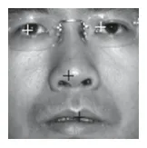
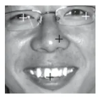
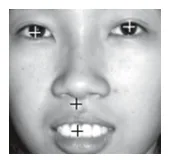
(a) (b) (c) (d)
Hình 8 a) Vị trí đặc trưng lệch 5 pixel hoặc ít hơn so với tâm lý tưởng của các đặc trưng. b) Các đặc trưng lệch từ 6 đến 10 pixel so với tâm lý tưởng của các đặc trưng. c) Lệch từ 11 đến 15 pixel so với tâm lý tưởng của các đặc trưng. d) Lệch hơn 16 pixel so với tâm lý tưởng của các đặc trưng
Bảng 4 Hiệu suất của mô hình FEETS/PRNN so với các bộ phân loại khác
Sai số (pixel) FEETS SVM C45 RBF NBM
≤5 58.8% 42.3% 32.3% 29.7% 15.4% ≤10 57.9% 36.7% 27.8% 28.2% 15.4% ≤15 50.9% 39.6% 22.6% 30.2% 22.6% > 15 47.1% 17.7% 29.4% 29.4% 5.9%
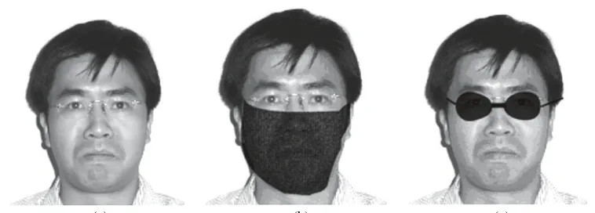
(a) (b) (c)
Hình 9 a: Đối tượng không có bất kỳ vật cản nào. b: Đối tượng đeo mạng che mặt c: Đối tượng đeo kính râm độ dài tương tự cho vector đặc trưng, cũng như hình dạng của FEETS. Hệ thống được đánh giá với các mức độ mất mát khác nhau, tức là mất một mắt, mất mũi, mất miệng. Cũng như mất nhiều đặc trưng, tức là mất cả hai mắt và mất cả mũi và miệng. Sử dụng vị trí đặc trưng hoàn hảo và đầy đủ đặc trưng làm tập huấn luyện, chúng tôi đã đánh giá hệ thống khi kiểm thử với các đặc trưng bị thiếu. Hình 10(a) và 10(b) lần lượt cho thấy hiệu suất của FEETS so với các hệ thống khác khi sử dụng Tập dữ liệu A và Tập dữ liệu B. Các thực nghiệm trong Tập dữ liệu B được chạy theo kiểm chứng chéo 5 lần, để đảm bảo rằng tất cả các hình ảnh đều được huấn luyện và kiểm thử lần lượt. Kết quả thực nghiệm cho thấy hệ thống của chúng tôi bền vững hơn các hệ thống khác khi các đặc trưng bị mất hoặc khi các nút bị thiếu.
6 Kết luận và Hướng phát triển
Chương này đã mô tả một khuôn khổ cho hệ thống nhận dạng cảm xúc khuôn mặt bền vững dựa trên việc mô phỏng các chức năng của hệ thống nhận dạng cảm xúc ở người. Cấu trúc Cây Cảm xúc Khuôn mặt (FEETS) mô hình hóa chức năng của phép biến đổi cảm giác liên quan đến vỏ não thị giác và hồi hải mã. Mạng Nơ-ron Đệ quy Xác suất (PRNN) mô hình hóa chức năng nhận dạng cảm xúc xử lý thích nghi của hạch hạnh nhân. Không giống như các phương pháp kết nối luận và thống kê thông thường dựa vào các biểu diễn tĩnh của dữ liệu dẫn đến các vector đặc trưng, cách tiếp cận trong chương này cho phép các mẫu được biểu diễn một cách phù hợp bằng đồ thị có hướng hoặc cây. Trong chương này, chúng tôi nhấn mạnh khuôn khổ tính toán lấy cảm hứng từ não bộ mang lại khả năng phân biệt cảm xúc năng động và thích nghi cao mà không cần đặc trưng hóa lớp tiên nghiệm. Chúng tôi đã đánh giá hệ thống bằng Cơ sở dữ liệu Cảm xúc Châu Á mà chúng tôi xây dựng để đại diện cho dân số Châu Á. Đối với các nghiên cứu thực nghiệm, hiệu suất nhận dạng cảm xúc phụ thuộc đối tượng và độc lập đối tượng được đối chuẩn với nhiều bộ phân loại nổi tiếng sử dụng các phương pháp kết nối luận thông thường (C4.5, RBF) và thống kê (NBM, SVM). Độ bền vững của hệ thống được kiểm thử với các sai số ở các điểm chuẩn cũng như các điều kiện khắc nghiệt khi các điểm chuẩn bị thiếu.
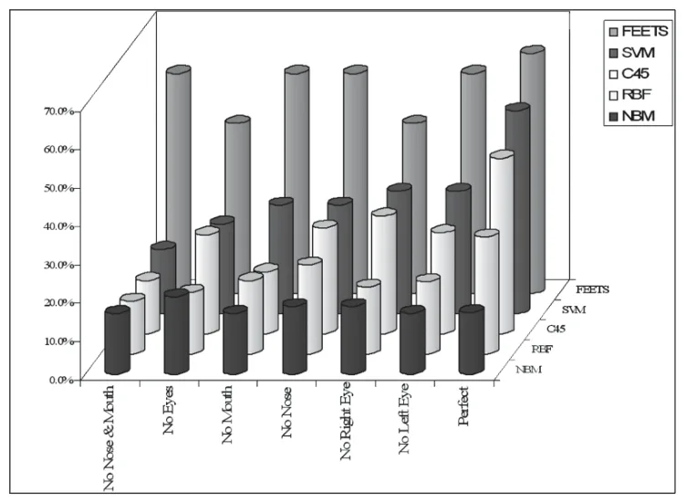
(a)
(b)
Hình 10 Biểu đồ cột 3D về kết quả hiệu suất của FEETS so với các bộ phân loại khác khi thiếu đặc trưng đối với a) Tập dữ liệu A. b) Tập dữ liệu B
Các nghiên cứu sâu hơn có thể được mở rộng để phát triển một khuôn khổ tính toán nhận thức thần kinh có khả năng tri giác và báo cáo thông tin cảm xúc – xã hội trong tương tác của con người theo thời gian thực. Giai đoạn đầu tiên của việc xử lý các khuôn mặt cảm xúc là một lượt quét truyền thẳng qua các vỏ não thị giác sơ cấp và kết thúc ở các vỏ não liên hợp. Trong trường hợp phát hiện một khuôn mặt cảm xúc, các đường chiếu ở các mức độ khác nhau của vỏ não thị giác (sơ cấp) và vỏ não liên hợp tới hạch hạnh nhân có thể cảnh báo hạch hạnh nhân về sự xuất hiện của một khuôn mặt cảm xúc. Một khi hạch hạnh nhân được cảnh báo về sự xuất hiện của một khuôn mặt cảm xúc, đến lượt nó, nó có thể hướng sự chú ý trở lại khuôn mặt đó để phân định rõ ràng việc phân loại khuôn mặt một cách chi tiết. Điều này có thể được thực hiện bằng cách sử dụng các đường chiếu ngược lại vỏ não liên hợp để tăng cường xử lý khuôn mặt này hoặc thông qua kích hoạt vỏ não trước trán để có thể khởi xướng việc ưu tiên lại tính nổi bật của khuôn mặt này trong vùng vỏ não trước trán và hướng sự chú ý trở lại khuôn mặt.
Lời cảm ơn Chúng tôi xin cảm ơn tất cả các tình nguyện viên đã tham gia và đóng góp vào việc tạo lập Cơ sở dữ liệu Cảm xúc Châu Á. Chúng tôi xin cảm ơn Muhammad Raihan Jumat Bin Md T. J. đã xử lý và mã hóa Cơ sở dữ liệu Cảm xúc Châu Á.
Tài liệu tham khảo
1. Ekman, P., Emotions Revealed. First Owl Books. 2004, New York: Henry Holt and Company LLC. 2. Daniel Levine Chapter in this book. 3. Leonid Perlovsky Chapter in this book. 4. Bechara, A., H. Damasio, and A.R. Damasio, Emotion, Decision making and the Orbitofrontal Cortex. Cerebral Cortex, 2000. 5. Isen, A.M., Positive Affect and Decision Making, in Handbook of Emotions. 2000, Guilford Press: New York. p. 417–435. 6. Perlovsky, L.I. (2001). Neural Networks and Intellect: using model-based concepts. Oxford University Press, New York, NY (3rd printing). 7. Baron-Cohen, S., Mindblindness: An Essay on Autism and Theory of Mind. MIT PRess. 1995. 8. Ellis, H.D. and M.B. Lewis, Capgras delusion: a window on face recognition. Trends in Cognitive Science, 2001. 5: p. 149–156. 9. Perlovsky, L.I. and McManus, M.M. (1991). Maximum Likelihood Neural Networks for Sensor Fusion and Adaptive Classification. Neural Networks 4 (1), pp. 89–102. 10. Frijda, N.H., The Emotions. 1986: Cambridge: Cambridge University Press. 11. Tian, Y.-L., T. Kanade, and J.F. Cohn, Recognizing Action Units for Facial Expression Analysis. IEEE Trans. on Pattern Analysis and Machine Intelli-gence, 2001. 23(2): p. 1–18. 12. Ekman, P., Telling Lies. 1991, New York: W.W. Norton. 13. S.Schachter, The interaction of Cognitive and physiological determinants of emotional state, in Advances in Experimental Social Psychology, L. Ber-towitz, Editor. 1964, Academic Press. p. 49–80. 14. Davis, M., The role of the amygdale in fear and anxiety. Annual Rev. Neuro-science, 1932. 15: p. 353–375. 15. Streit, M., A.A. Ioannides, L. Liu, W. Wolwer, J. Dammers, J. Gross, W. Gaebel, and H.W. Muller-Gartner, Neurophysiological correlates of the rec-ognition of facial expressions of emotion as revealed by magnetoencephalo-graphy. Cognitive Brain Res., 1999. 7: p. 481–491. 16. Wong, J.-J. and S.-Y. Cho, A Brain-Inspired Framework for Emotion Recog-nition. Neural Information Processing, 2006. 10(7): p. 169–179.
17. Taylor, John G., Fragopanogos, N., Cowie, R., Douglas-Cowie, E., Fotinea, S-E., Kollias, S., An Emotion Recognition Architecture Based on Human Brain Structure, Lecture Notes in Computer Science, (2714), pp. 1133–1142, 2003. 18. Viola, P. and M. Jones. Robust Real-time Object Detection. in Second Inter-national Workshop on Statistical and Computational Theories of Vision - Modeling, Learning, Computing, and Sampling. 2001. Vancouver, Canada. 19. Freund, Y. and R.E. Schapire, A decision-theoretic generalization of online learning and an application to boosting, in Computational Learning Theory: Eurocolt ’95. 1995, SpringerVerlag. p. 23–37. 20. Liu, C. and H. Wechsler, Independent Component Analysis of Gabor Features for Face Recognition. IEEE Transactions on neural networks, 2003. 14(4): p. 919–928. 21. Wong, J.-J. and S.-Y. Cho. Recognizing Human Emotion From Partial Facial Features. in IEEE World Congress on Computational Intelligence (IJCNN). 2006. Vancouver, Canada. p. 166–173. 22. Nakamura, K., Nitta, J. Takano, H., and Yamazaki, M., Consecutive Face Recognition by Association Cortex - Entorhinal Cortex - Hippocampal Formation Model, in International Joint Conference on Neural Networks, (3), pp. 1649–1654, 2003. 23. Ekman, P. and W. Friesen, Facial Action Coding System: A Technique for the Measurement of Facial Movement. 1978, Palo Alto, CA: Consulting Psy-chologist Press. 24. Fracesoni, E., P. Frasconi, M. Gori, S. Marinai, J.Q. Sheng, G. Soda, and A. Sperduti, Logo recognition by recursive neural networks, in Lecture Notes in Computer Science, R. Kasturi and K. Tombre, Editors. 1997, Springer-Verlag: New York. p. 104–117. 25. Sperduti, A. and A. Starita, Supervised neural networks for classification of structures. IEEE Trans. Neural Networks, 1997. 8: p. 714–735. 26. Cho, S.-Y., Z. Chi, W.-C. Siu, and A.C. Tsoi, An Improved Algorithm for learning longterm dependency problems in adaptive processing of data struc-tures. IEEE Trans. on Neural Networks, 2003. 14(4): p. 781–793. 27. Frasconi, P., M. Gori, and A. Sperduti, A General Framework for Adaptive Processing of Data Structures. IEEE Trans. Neural Networks, 1998. 9: p. 768–785. 28. Manjunath, B.S. and W.Y. Ma, Texture Features for Browsing and Retrieval of Image Data. IEEE Transactions on Pattern Analysis and Machine Intelli-gence, 1996. 18(8): p. 837–842. 29. Streit, D.F. and T.E. Luginhuhl, Maximum likelihood training of probabilistic neural networks. IEEE Trans. on Neural Networks, 1994. 5(5): p. 764–783. 30. Roberts, S. and L. Tarassenko, A probabilistic resource allocating network for novelty detection. Neural Computation, 1994. 6: p. 270–284. 31. Mak, M.W. and S.Y. Kung, Estimation of elliptical basis function parameters by the EM algorithms with application to speaker verification. IEEE Trans. Neural Networks, 2000. 11(4): p. 961–969. 32. Lin, S.H., S.Y. Kung, and L.J. Lin, Face recognition/detection by probabilistic decision-based neural network. IEEE Trans. on Neural Networks, Special Is-sue on Biometric Identification, 1997. 8(1): p. 114–132. 33. Cho S.Y., Probabilistic Based Recursive Model for Adaptive Processing of Data Structures, Expert Systems With Applications, in press, 2007. (http://dx.doi.org/10.1016/ j.eswa.2007.01.021) 34. Tsoi, A.C., Adaptive Processing of Data Structure : An Expository Overview and Comments. 1998, Faculty Informatics, Univ. Wollongong, Wollongong: Australia. 35. Hammer, B., M. A., A. Sperduti, and S. M., A general framework for unsu-pervised processing of structured data. Neurocomputing, 2004. 57: p. 3–35. 36. Bengio, Y., P. Simard, and P. Frasconi, Learning Long Term Dependencies with Gradient Descent is difficult. IEEE Trans. on Neural Networks, 1994. 5(2): p. 157–166. 37. Kung, S.Y. and J.S. Taur, Decision-Based Neural Networks with Sig-nal/Image classification applications. IEEE Trans. Neural Networks, 1995. 6: p. 170–181. 38. Cho, S.-Y. and C.T. W.S., Training Multilayer Neural Networks Using Fast Global Learning Algorithm - Least Squares and Penalized Optimization Methods. Neurocomputing, 1999. 25(1–3): p. 115–131.
39. Lyons, M.J., J. Budynek, and S. Akamatsu, Automatic Classification of Single Facial Images. IEEE Transactions on Pattern Analysis and Machine Intelligence, 1999. 21(12): p. 1357–1362. 40. Yin, L., X. Wei, Y. Shun, J. Wang, and M.J. Rosato. A 3D Facial Expression Database for Facial Behavior Research. in 7th International Conference on Automatic Face and Gesture Recognition. 2006. 41. Sebe, N., M. Lew, I. Cohen, Y. Sun, T. Gevers, and T. Huang. Authentic facial expression analysis. in International Conference on Automatic Face and Gesture Recognition. 2004. Seoul, Korea. p. 517–522. 42. Cowie, R., E. Douglas-Cowie, N. Tsapatsoulis, G. Votsis, S. Kollias, W. Fellenz, and J. Taylor, Emotion Recognition in Human-computer Interaction. IEEE Signal Processing Magazine, 2001. 18(1): p. 32–80. 43. Platt, J., Fast Training of Support Vector Machines using Sequential Minimal Optimization, in Advances in Kernel Methods - Suppoort Vector Learning, B. Scholkopf, C. Burges, and A. Smola, Editors. 1998, MIT Press. p. 185–208. 44. Quinlan, R., C4.5: Programs for Machine Learning. 1993, San Mateo, CA: Morgan Kaufmann Publishers. 45. Mccallum, A. and K. Nigam. A Comparison of Event Models for Naive Bayes Text Classification. in International Conference on Machine Learning. 1998. p. 41–48. 46. Witten, I.H. and E. Frank, Data Mining: Practical machine learning tools and techniques. 2nd Edition. 2005: Morgan Kaufmann, San Francisco.
Phụ lục
Hình 11 cho thấy thiết lập của trạm chụp ảnh. Hình ảnh được chụp bằng máy ảnh kỹ thuật số Ricoh R1V 5 megapixel sử dụng cài đặt ISO 64 có đèn flash từ máy ảnh. Đối tượng ngồi cách máy ảnh 143 cm trước phông nền trắng. Chúng tôi
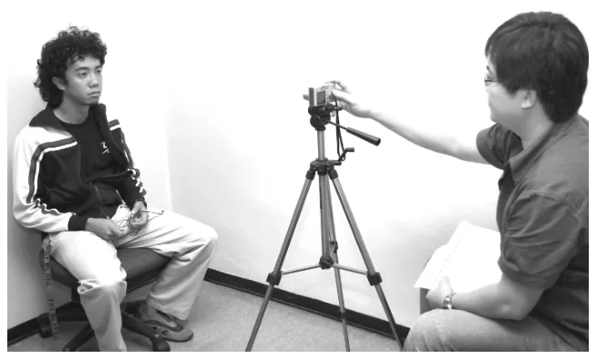
Hình 11 Trong quá trình thu thập ảnh, tình nguyện viên ngồi trước phông nền trắng, ở bên trái ảnh thực hiện một biểu cảm. Máy ảnh được đặt cách đối tượng 143 cm. Người chụp ảnh ngồi ở bên phải của bức ảnh này, sẽ đưa ra hướng dẫn cho đối tượng để thực hiện các biểu cảm và tư thế khác nhau. Đối tượng nhìn thấy ở đây đang ở tư thế chụp chính diện. Đối tượng được yêu cầu xoay 45 độ sang trái và phải cho 2 tư thế còn lại đã cắt và điều chỉnh tỷ lệ khuôn mặt gốc 2560×1920 pixel xuống khoảng 900×1024 pixel để lưu trữ. Chúng tôi chú thích, xử lý và lưu trữ từng ảnh ở định dạng Bitmap màu 24-bit làm dữ liệu chuẩn (ground truth). Tên tệp của các ảnh được mã hóa theo cách sau:
Mỗi phần của tên tệp lưu trữ các thông tin sau theo thứ tự tăng dần: ID đối tượng, nhóm tuổi, giới tính, chủng tộc, sự đồng ý công bố, cảm xúc, tư thế và số mẫu. Sử dụng định dạng tên tệp này, dữ liệu có thể tìm kiếm được bằng truy vấn. Cùng với các hình ảnh, chúng tôi đã đưa vào vị trí tâm của mắt, mũi và miệng và lưu trữ trong một tệp định dạng số nguyên 8-bit với tên tệp tương ứng có phần mở rộng là “loc” làm dữ liệu chuẩn.
Các Ứng dụng Kỹ thuật của Mô hình Khứu giác từ Nhận dạng Mẫu đến Khứu giác Nhân tạo
Guang Li, Jin Zhang và Walter J. Freeman
Tóm tắt Bắt nguồn từ các hệ thống khứu giác sinh học, một mô hình khứu giác có tên KIII đã được thiết lập. Khác với các mạng nơ-ron nhân tạo thông thường, mô hình KIII hoạt động theo cách hỗn loạn tương tự như các hệ thống khứu giác sinh học. Là một loại mạng nơ-ron hỗn loạn, mạng KIII có thể được sử dụng như một bộ phân loại tổng quát cần thời gian huấn luyện ít hơn nhiều so với các mạng nơ-ron nhân tạo khác. Các thực nghiệm áp dụng mạng nơ-ron mới này vào nhận dạng chữ số viết tay, phân loại chữ số nói tiếng Quan Thoại, nhận dạng khuôn mặt người và phân loại EEG bình thường và thiếu oxy đã được thực hiện. Dựa trên các mô hình KIII, một ứng dụng của mũi điện tử trong phân loại trà đã được khám phá. Hy vọng rằng các mô hình tập K sẽ giúp mũi điện tử mang tính sinh học hơn.
1 Giới thiệu
Trong những năm gần đây, lý thuyết hỗn loạn đã được sử dụng để tìm hiểu động lực học thần kinh trung mô, ở cấp độ tự tổ chức mà tại đó các quần thể nơ-ron có thể tạo ra các mẫu hoạt động mới [5]. Từ nhiều năm nghiên cứu trong lĩnh vực này, người ta đề xuất rằng tập hút hỗn loạn là một đặc tính thiết yếu của mạng nơ-ron sinh học. Bắt nguồn từ nghiên cứu về hệ thống khứu giác, mô hình KIII phân tán, là một mạng hỗn loạn nhiều chiều, trong đó sự tương tác của các nút kết nối toàn cục dẫn đến một cảnh quan toàn cục gồm các tập hút hỗn loạn nhiều chiều. Sau khi học tăng cường để phân biệt các lớp của các mẫu khác nhau, hệ thống hình thành một cảnh quan gồm các lưu vực cục bộ ít chiều, với một lưu vực cho mỗi lớp mẫu [13]. Sự hình thành các lưu vực cục bộ này tương ứng với ký ức về các mẫu khác nhau; việc nhận dạng một mẫu diễn ra khi quỹ đạo hệ thống đi vào một lưu vực nhất định và hội tụ về tập hút trong lưu vực đó. Sự hội tụ loại bỏ thông tin thừa, đó là quá trình trừu tượng hóa. Đầu ra của hệ thống được điều khiển bởi tập hút, biểu thị lớp mà kích thích thuộc về, do đó thực hiện sự khái quát hóa. Trừu tượng hóa và khái quát hóa là những thuộc tính mạnh mẽ của mạng nơ-ron sinh học nhưng không dễ thực hiện với mạng nơ-ron nhân tạo; tuy nhiên, việc sử dụng động lực học hỗn loạn của các mô hình tập K đã khắc phục được hạn chế này.
Mô hình KIII được xây dựng theo kiến trúc của hệ thống thần kinh khứu giác để mô phỏng các dạng sóng đầu ra quan sát được trong các thực nghiệm sinh học với EEG và ghi nhận đơn vị. Mô hình KIII dựa trên hỗn loạn tất định tỏ ra rất không ổn định. Việc đưa vào nhiễu mô phỏng các nguồn nhiễu sinh học đã làm cho mạng KIII ổn định và bền vững [3], điều này đưa vào khái niệm ‘Hỗn loạn Ngẫu nhiên’ (Stochastic Chaos) và giúp mô hình KIII thoát khỏi sự nhạy cảm với biến thiên của các tham số và điều kiện ban đầu, đồng thời cung cấp một hệ thống hỗn loạn nhiều chiều có khả năng phân loại mẫu nhanh chóng và đáng tin cậy mà không cần hạ gradient [6]. Ở đây chúng tôi trình bày một số kết quả thực nghiệm áp dụng mạng KIII để phân loại chữ số viết tay, chữ số nói tiếng Quan Thoại, khuôn mặt người và tín hiệu EEG bình thường và thiếu oxy. Hơn nữa, một mũi điện tử dựa trên mô hình KIII được khám phá để phân loại các loại trà khác nhau. Hy vọng rằng các mô hình tập K sẽ giúp mũi điện tử mang tính sinh học hơn.
2 Các Mô hình Tập K
Một hệ thống thần kinh khứu giác sinh học bao gồm hành khứu giác (OB), nhân khứu giác trước (AON) và vỏ não trước quả lê (PC). Phù hợp với kiến trúc giải phẫu, mạng KIII là một mô hình mạng nơ-ron đa lớp, bao gồm một số đơn vị K0, KI và KII. Hình 1 cho thấy cấu trúc liên kết của mô hình KIII, trong đó M, G đại diện cho các tế bào mũ (mitral) và tế bào hạt (granule) trong hành khứu giác. E, I, A, B lần lượt đại diện cho các tế bào kích thích và ức chế trong nhân khứu giác trước và vỏ não trước quả lê.
Trong số các mô hình này, mỗi nút được mô tả bằng một phương trình vi phân bậc hai như (1), được rút ra từ rất nhiều thực nghiệm điện sinh lý:
Wij + Q(x j(t), q j) + Ii(t),
1 a · b
′′ i (t) + (a + b)x
′ i(t) + a · b · xi(t)
= N x j̸=i (1) trong đó i = 1...N, N là số lượng kênh, xi(t) biểu thị biến trạng thái của quần thể nơ-ron thứ i, x j(t) biểu thị biến trạng thái của quần thể nơ-ron thứ j được kết nối với thứ i, trong khi Wij chỉ cường độ kết nối giữa chúng. Ii(t) là hàm đầu vào đại diện cho đầu vào bên ngoài tới kênh thứ i. Tham số a = 0,220ms−1, b = 0,720ms−1 phản ánh hai hằng số tốc độ.
Q(x j(t), q j) là một hàm sigmoid phi tuyến tĩnh được suy ra từ mô hình Hodgkin-Huxley và được biểu diễn như (2).
⎧ ⎪⎪⎪⎨ q(1 −e−ex (t)−1 q ), nếu x(t) > x0
Q(x j(t), q) =
,
⎪⎪⎪⎩
−1, nếu x(t) < x0 (2)
x0 = ln(1 −q ln(1 + 1 q )),
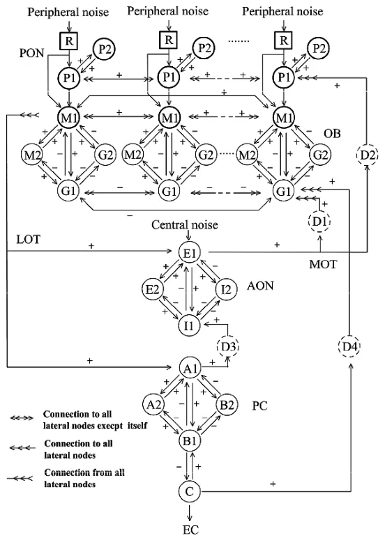
Hình 1 Cấu trúc liên kết của mô hình KIII
trong đó q biểu thị tiệm cận cực đại của hàm sigmoid, cũng thu được từ các thực nghiệm sinh học. Mỗi nút đại diện cho một quần thể nơ-ron hoặc tập hợp tế bào. Nếu tập hợp tế bào không chứa bất kỳ tương tác nào giữa các nơ-ron của nó, nó được biểu diễn bằng mô hình K0. Mô hình KI biểu diễn các quần thể nơ-ron được kết nối lẫn nhau, với các kết nối synap kích thích hoặc ức chế. KII là một bộ dao động phi tuyến ghép nối được sử dụng để mô phỏng các kênh trong lớp OB, AON và PC với cả kết nối dương và âm. Mạng KIII mô tả toàn bộ hệ thống thần kinh khứu giác. Nó gồm các quần thể nơ-ron, kết nối synap cục bộ, và các vòng lặp truyền thẳng dài và hồi tiếp trễ thời gian phân tán. Trong cấu trúc liên kết của mạng KIII, R đại diện cho thụ thể khứu giác, nhạy cảm với phân tử mùi và cung cấp đầu vào cho mạng KIII. Lớp quanh cầu (PG) và lớp hành khứu giác (OB) được phân tán, trong bài báo này chứa 64 kênh. Lớp AON và PC chỉ bao gồm một mạng KII duy nhất. Các tham số trong mạng KIII, bao gồm các giá trị cường độ kết nối giữa các nút khác nhau và các giá trị độ lợi của các kết nối ngang, vòng lặp truyền thẳng và hồi tiếp, được tối ưu hóa bằng cách đo điện thế gợi khứu giác và EEG, mô phỏng dạng sóng và các tính chất thống kê của chúng, và khớp các hàm mô phỏng với dữ liệu bằng hồi quy phi tuyến [5]. Sau khi tối ưu hóa tham số, mạng KIII tạo ra dạng sóng giống EEG với phổ công suất 1/f [1, 2]. Một số phân tích số của mạng KIII, sử dụng bộ tham số trong [2], được trình bày trong các Hình 2, 3 và 4. Khi không có kích thích, hệ thống biểu hiện một dao động không tuần hoàn, điều này cho thấy hệ thống đang ở trạng thái cơ sở – một tập hút hỗn loạn toàn cục, như thể hiện trong Hình 2. Khi có kích thích, tương ứng với một phân tử mùi nào đó được thụ thể khứu giác thu nhận, quỹ đạo của hệ thống nhanh chóng đi vào lưu vực cục bộ cụ thể và hội tụ về một tập hút. Chuỗi thực xuất hiện dưới dạng một đợt bùng phát bán tuần hoàn trong dải gamma. Hệ thống cư trú trong lưu vực cục bộ trong khoảng thời gian gần bằng thời lượng của kích thích bên ngoài. Sau khi kích thích chấm dứt, mạng KIII trở về trạng thái cơ sở.
Hình 3 và 4 cho thấy một số bản đồ pha của một vài cặp nút trong mạng KIII. Đó là một mô tả gián tiếp khác về tập hút hỗn loạn cơ sở và các chuyển đổi trạng thái diễn ra khi kích thích bắt đầu và kết thúc. Loại chuyển đổi trạng thái này thường mất ít hơn 10 ms. Trong quá trình học, các mẫu kích thích khác nhau sẽ hình thành các lưu vực cục bộ khác nhau và các tập hút khác nhau trong không gian quỹ đạo hệ thống. Trong mạng KIII, sự hình thành và củng cố các lưu vực cục bộ này được thực hiện p2
0 500 1000 1500 2000 0 1 2
M12
0 0.1
0 500 1000 1500 2000 −0. 1
G22
0 1
0 500 1000 1500 2000 −1
E1
0 0.5
0 500 1000 1500 2000 −0. 5
A1
0 0.05
0 500 1000 1500 2000 −0.05
Hình 2 Đầu ra của một số nút của mạng KIII khi không có kích thích
0.4 Mặt phẳng pha M12−G12
0.6 Mặt phẳng pha E1−I1
0.3
0.4
0.2
0.2
0.1
0
−0.1 −0.05 0 0.05 0.1 0
−0.4 −0.2 0 0.2 0.4 −0.2
0.1 Mặt phẳng pha A1−B1
0.2 Mặt phẳng pha M11−M21
0.05
0
0
−0.2
−0.05
−0.4
−0.05 0 0.05 −0.1
−0.1 −0.05 0 0.05 0.1 −0.6
Hình 3 Bản đồ pha của M1-G1, E-I, A-B, M1-M2, khi không có kích thích thông qua việc thay đổi trọng số giữa các nút tương ứng, phù hợp với sự tăng và giảm sinh học của cường độ kết nối synap, vốn đã được đánh giá bằng cách khớp đường cong các nghiệm của phương trình với đáp ứng xung của hệ thống khứu giác đối với các kích thích điện [5]. So với các hệ thống hỗn loạn tất định ít chiều nổi tiếng như các tập hút Lorenz, Rossler và Logistics, các hệ thần kinh là những hệ thống nhiều chiều, không tự trị và
2 Mặt phẳng pha M12−G12
1 Mặt phẳng pha E1−I1
1
0.5
0
0
−2 −1 0 1 −1
−1 −0.5 0 0.5 1 −0.5
1 Mặt phẳng pha A1−B1
0.5 Mặt phẳng pha M11−M21
0.5
0
0
−0.5
−0.5
−1
−1 −0.5 0 0.5 1 −1
−2 −1 0 1 −1.5
Hình 4 Bản đồ pha của M1-G1, E-I, A-B, M1-M2, khi có kích thích có nhiễu [7]. Trong mạng KIII, nhiễu Gaussian chỉnh lưu độc lập được đưa vào mọi thụ thể khứu giác để mô hình hóa nhiễu kích thích ngoại biên, và một kênh đơn nhiễu Gaussian với độ lệch kích thích để mô hình hóa các nguồn nhiễu sinh học trung ương. Nhiễu cộng thêm đã loại bỏ sự mất ổn định số của mô hình KIII, và làm cho quỹ đạo hệ thống ổn định và bền vững dưới các thước đo thống kê, có nghĩa là dưới sự nhiễu loạn của các điều kiện ban đầu hoặc các tham số, các quỹ đạo hệ thống vẫn ổn định một cách bền vững [2]. Nhờ hỗn loạn ngẫu nhiên này, mạng KIII không chỉ mô phỏng các dạng sóng EEG hỗn loạn, mà còn có được khả năng nhận dạng mẫu, mô phỏng một khía cạnh của trí tuệ sinh học, như đã được chứng minh qua các ứng dụng trước đây của mạng KIII vào nhận dạng chuỗi một chiều, dữ liệu công nghiệp và các mẫu EEG không-thời gian [7].
3 Các Ứng dụng của Mô hình Khứu giác vào Phân loại
3.1 Quy trình Phân loại
Quy trình phân loại được thể hiện trong Hình 5. Các đặc trưng được trích xuất từ một đối tượng để đưa vào mô hình KIII dưới dạng vector đặc trưng nhằm xử lý tiếp. Vector đặc trưng thay đổi từ ứng dụng này sang ứng dụng khác và được tối ưu hóa để đạt được hiệu suất phân loại tốt.
Đầu ra của mạng KIII ở mức tế bào mũ (M) được lấy làm thước đo hoạt động của mô hình KIII gây ra bởi vector đặc trưng đầu vào. Hoạt động của kênh thứ i được biểu diễn bằng SDαi, là độ lệch chuẩn trung bình của đầu ra của nút tế bào mũ thứ i (Mi) trong suốt khoảng thời gian trình diễn các mẫu đầu vào, như (3). Khoảng thời gian đáp ứng với các mẫu đầu vào được chia đều thành các phân đoạn và độ lệch chuẩn của phân đoạn thứ i được tính là SDαik, SDαi là giá trị trung bình của s phân đoạn này. SDα là một vector hoạt động 1 ∗n chứa thước đo hoạt động của tất cả các nút ở mức tế bào mũ. SDm α là thước đo hoạt động trung bình trên toàn bộ lớp OB với n nút (4).
SDαi = 1
S S
k=1SDαik (3)
α = 1
SDm
n n k=1SDαi (4)
Trước khi thực hiện phân loại, mạng KIII cần được huấn luyện cũng như các mạng nơ-ron nhân tạo thông thường. Các quy tắc huấn luyện sẽ được thảo luận sau trong Mục 3.2.